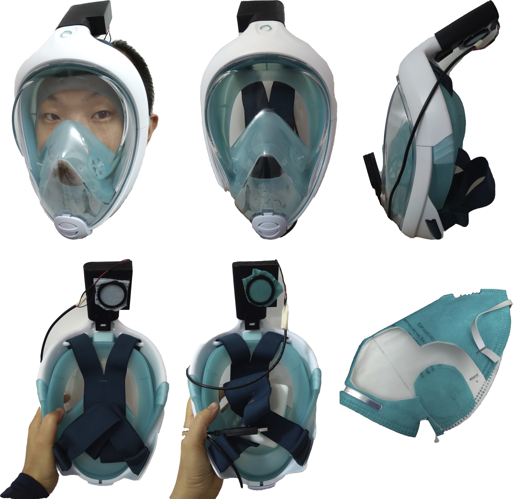

口罩倍增器

买口罩
我在2019-12-31日下单定了30个3M 9132的医用N95口罩(没错, 就是领导干部同款), 1月2日就送到了. 因为:
- 我学过《传染病学》;
- 我在SARS时在人民医院实习;
- 我从小在大院长大;
所以, 我懂专业, 我记得历史, 我知道政府如何工作.
所以, 我在第一时间买了口罩.
但买少了, wishful thinking害死人.
目的
结果现在买不到口罩了, 于是如何充分利用现有口罩就成了需要解决的重要问题.
要把一个口罩掰成N瓣用是完全可能的, 只要保证有良好的密封性即可. 但是由于通气面积减小, 呼吸阻力就将增大N倍以上. 呼吸阻力大, 轻则憋闷, 重则可能有晕倒的危险. 必须在减小口罩使用面积的同时, 减小呼吸阻力.
对于呼吸阻力, 单位是帕斯卡, 老国标里外科口罩大约是50pa, 对于N95大约是350pa.
减小吸气阻力的方法, 我用的是风扇. 试过几个风扇以后, 发现还是要使用12v供电的径流风扇才能满足要求.
结果
成品是这样的: 
材料
- 迪卡侬浮潜面罩 (https://www.decathlon.com.cn/zh/p/easybreath-surface-snorkelling-mask/_/R-p-1616)
- NMB BM5020-04W-B49 12v径流风扇 (https://item.taobao.com/item.htm?id=553042177755 )
- 5v转12v升压线 (https://item.taobao.com/item.htm?id=526012870694)
现在已经是第三版, 需要3D打印一个接口, 将12v风扇装在里面, 如果怕漏气, 可以用凡士林来密封. 口罩剪取一块直径约5cm的圆, 用固定环封在接口表面. 于是一个口罩大约可以剪出4-6块, 相当于提高了口罩的利用率.
制造
本设计开源, 所有的文件已经放在了thingivers上https://www.thingiverse.com/thing:4141738/ 如果访问不方便, 也可以从本地下载. 不仅有STL文件, 还有fusion360的可编辑文件.
使用PLA打印, 20%填充率, 无需热床, partA推荐使用raft, 12v径流风扇可能塞进去比较紧, 可以把上面两个拧螺丝用的支架剪掉.
测试结果
对于呼吸阻力, 我没有设备可以测试, 只进行了以下这些测试:
- 常规呼吸时, 没有明显的三凹征, 所谓三凹征就是如果吸气阻力太大, 吸气时会出现胸骨上窝和双侧锁骨上窝的凹陷. (这是当前第三版的测试)
- 能够戴上, 并以每分钟25划以上的速度持续练习划船机5分钟(第二版测试通过, 用的是5v径流风扇)
- 能够戴上, 并且连续做40个深蹲(第一版测试通过, 用的是12v轴流风扇)
密闭性和过滤性能只能依赖泳镜的设计和口罩的性能了. 有个优点是由于使用风扇, 所以相当于一直是单向空气流动, 加上面罩本身的单向阀门, 所以口罩不会被呼出的水汽打湿, 一定程度上可以更增加使用寿命.
缺点:
- 我没有在呼出阀门上加防护, 不确定在吸气的瞬间是否会有少许返流.
- 如果突然猛吸气, 仍然会产生三凹征, 但如果缓慢平稳呼吸就不会.
- 头顶伸出东西太多, 不能兼容现有防护服
其实如果做到现有的防毒面具上, 有可能效果会更好, 但, 也买不到哇.
免责声明
注意, 本设计无法验证安全性, 使用者责任自负.